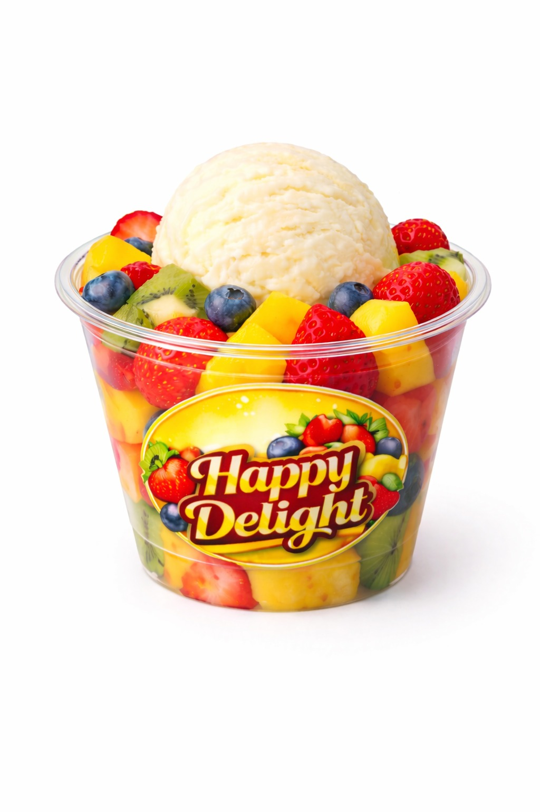

Vanilla ice cream with freshly cut fruits. Bright, creamy, refreshing.

Happy Delight is made with creamy ice cream and generous cuts of fresh fruits. The fruits are washed and freshly chopped for every batch, then layered around the scoop for a colourful, refreshing bite. It is light, sweet, and perfect when you want something chilled without feeling heavy.
Every serving is assembled fresh to ensure perfect balance in every bite. The cold creaminess of the ice cream blends beautifully with the natural freshness of fruits. Happy Delight is crafted for moments when you want comfort, freshness, and a little indulgence together.